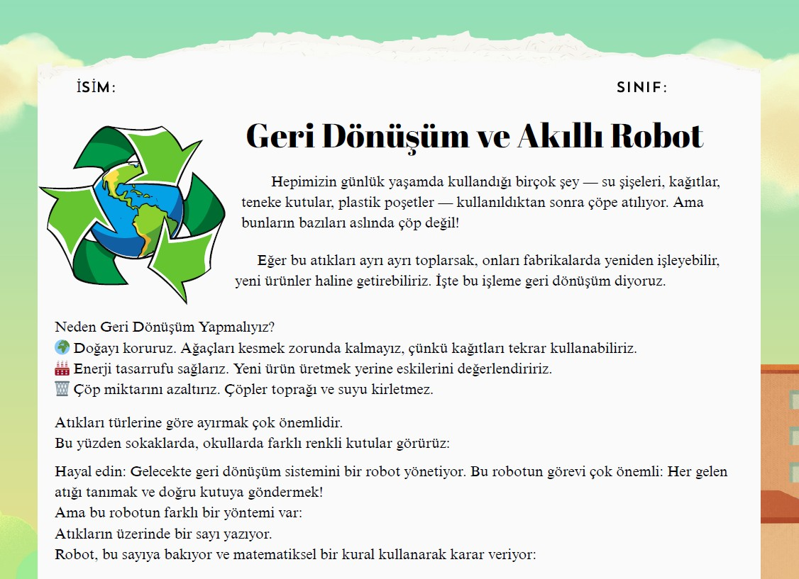

Bu kazanım ile hazırlanmış etkinlik kağıdı için tıklayınız.
Bu etkinlik kağıdı için hazırlanmış interaktif araçları ve daha fazla bilgiyi edinmek için ise bilgilendirme kağıdını görüntüleyin.

Çalışma Kağıdı Görüntüle
Bilgilendirme Kağıdı Görüntüle